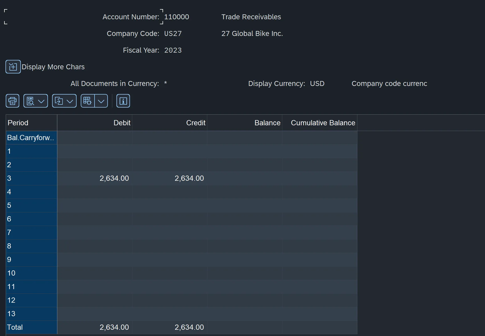

During the second semester of the MSIS program at Indiana University, I had the privilege of experiencing an end-to-end SAP implementation during an ERP/SAP class called
BUS-S 542. We had access to an SAP host server with our own Company Codes and were responsible for configuring business processes for the multiple chapters of our course
textbook. Notable chapters included Financial Accounting, Management Accounting, the Procurement Process, the Fulfillment Process, and finally, the Production Process. Some
information about my experience will be noted for each of these chapters below.
Financial Accounting (FI)
During this chapter, I learned a substantial amount about FI in SAP and businesses in general, which posed as a great refresher on the Accounting course I took during my undergrad.
Some specific content we learned and configured in the system during this chapter include:
- We detailed and defined G/L (General Ledger) Accounts that can be posted to throughout the many business processes available in SAP.
- Considered Accounts Payable and Accounts Receivable Accounting and how G/L accounts should only have postings through reconciliation accounts.
- Determined a CoA (Chart of Accounts) and how accounts in the CoA are used to build up a G/L account.
- Set information related to posting periods and fiscal year information to ensure only proper postings are made to the system.
- Adjusted fields for different G/L accounts as not all transactions require access to the same data.
- Determined document number ranges for specific document types and postings to ensure consistent data between documents.

Example result of FI portion of assignment including a balance in the Trade Accounts Receivable G/L accounts.
Management Accounting (CO)
During this chapter, I learned more information on how organizations handle and allocate internal costs that aren't important to report to the government but may provide valuable insights on internal cost centers and other general expenses.
Some specific content we learned and configured in the system during this chapter include:
- We covered Cost Center Accounting and Internal Order Accounting to view the various ways an organization may choose to classify costs.
- Created a controlling area to associate costs with proper portions of a Client.
- Managed different types of settlement and allocation in case an organization wants to distribute costs in a different manner.
Example of Primary Cost elements associated with my Company Code.
Procurement
During this chapter, I learned about the complicated process on how organizations handle procurement of raw materials that are used in production.
Some specific content we learned and configured in the system during this chapter include:
- We covered specific elements on the process flow of procurement in SAP, which includes the creation of a purchase requisition, conversion or creation of a purchase order, goods receipt, invoice verification, and then finally vendor payment.
- Learned how materials can be valued at different levels in SAP to change height of scope for averages.
- Established a purchasing organization for a company code alongside a purchasing group to allow for purchasing of raw materials at a plant level.
- Initiated storage locations in plants to allow for materials to be placed in an appropriate location upon receipt.
- Determined material types to differentiate between raw, semi-finished, trading, and finished goods.
- Interacted with vendor payment and account determination procedures.
- Set tolerance limits in order to prevent employees from mistakenly purchasing extreme amounts of materials.
Here's an exmaple of a paid invoice to a customer upon receipt of trading goods.
Fulfillment
During this chapter, I learned about how organizations handle fulfillment towards customers within SAP.
Some specific content we learned and configured in the system during this chapter include:
- We covered the flow of a fulfillment process in SAP, including customer inquiry, a sales quote, creation of a purchase order, conversion or creation of a sales order, shipment, posting of an invoice, and finally, payment.
- Defined a distribution channel, chain, and division to be combined with a sales organization in order to provide sales to customers.
- Determined shipping points within plants in order to allow for shipment of products, which include loading points.
- Set loading groups in order to differentiate how materials should be handled when loading at a loading point (handcart, fork lift, crane, etc.)
- Created terms for availability checks of finished and semifinished goods to change conditions for creation of a sales order.
- Set up automatic account determination to receive payment and manage inventory postings.
Example of a customer paying for trading goods sold by my company code.
Production
During this chapter, I learned about arguably the most complex part to implement within SAP. We created all of the elements necessary to produce products from raw and semi-finished materials, completing all portions of SAP necessary to operate end-to-end.
Some specific content we learned and configured in the system during this chapter include:
- We covered the general flow of production, which includes a planned order, conversion or creation of a production order, goods issue to production work centers, order confirmation upon completion of goods, goods receipt to indicate finished goods in inventory, and finally order settlement to allocate costs away from the production order.
- Identified different forms of production (make-to-order, make-to-stock, repetitive, etc.) and how they can be included in SAP.
- Learned about different types of scheduling (Forward vs Backwards) and how they function alongside availability checks.
- Managed business rules and parameters associated with production, such as number ranges, automatic account determination, and floats in the process.
- Organized routing to different work centers and final confirmation and settlement of a production order.
Example of finished production for a silver deluxe touring bike.